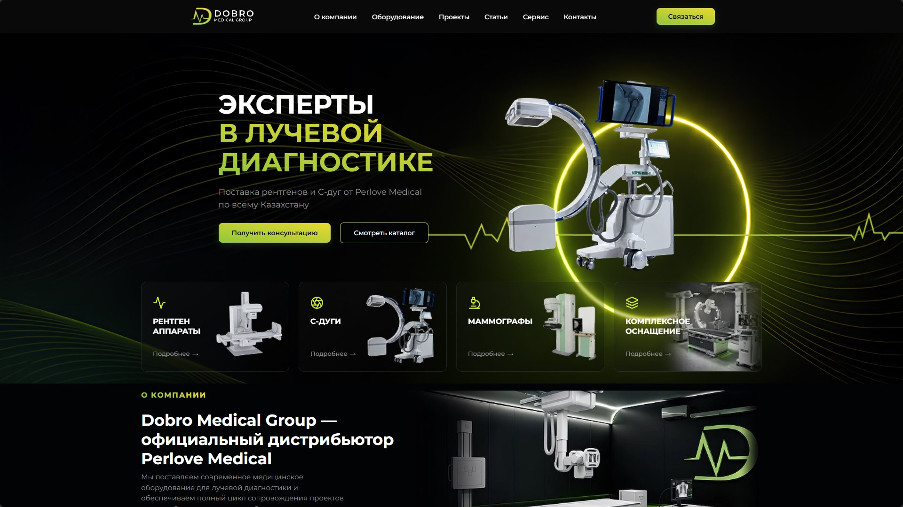

PLUVIARAIN / GLASS / INTERACTION
01
INTERACTIVE EXPERIMENT
Pluvia — Rain on glass
Atmospheric forest rain, droplets gathering on glass, cursor interaction, sound states, and a wave-like clearing effect.
FRONTEND DEVELOPMENT / CREATIVE CODING
I'm Arseniy, a frontend developer from Kazakhstan. I create expressive web interfaces, interactive experiments, and thoughtful website experiences.
01 / SELECTED WORK
Experiments in interaction, motion, and visual storytelling.
INTERACTIVE EXPERIMENT
Atmospheric forest rain, droplets gathering on glass, cursor interaction, sound states, and a wave-like clearing effect.
CREATIVE CODING
Space-inspired, scroll-driven particle forms with soft transitions and interactive cursor response.

WEBSITE / MEDICAL TECHNOLOGY
Medical equipment website concept featuring a striking hero section, product categories, and strong visual hierarchy.
02 / ABOUT ME
I enjoy turning visual concepts into responsive, interactive websites. My focus is on frontend fundamentals, smooth motion, and the details that make an interface memorable.
I'm building experience through independent projects and looking for an opportunity to grow with a web development studio.
03 / LET'S CONNECT
Available to discuss junior frontend opportunities, collaborations, and small web projects.
Let's talk on Telegram ↗